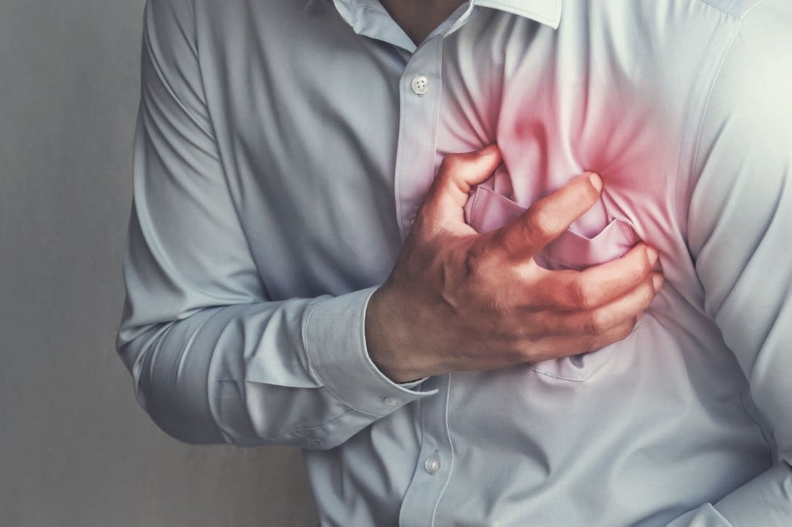

Зимата е времето на инфарктите и инсултите. Как да се предпазите през студения сезон?
Зимата е прекрасно време на годината, но въпреки това носи със себе си и сериозни здравословни проблеми. Не става въпрос само за обикновените настинки. Ниските температури до голяма степен увеличават риска от появата на усложнения в сърдечно-съдовите заболявания – учените от Швеция стигнаха до това заключение.

Шведските кардиолози проведоха мащабно изследване, показващо влиянието на отрицателните метеорологични фактори върху риска от инфаркта и инсулта. Резултатите са публикувани в списанието JAMA Cardiology.
Учените прегледаха медицинските истории на повече от 967 хиляди европейци от 1997 до 2010 година. Те проведоха изследване на смъртността на пациентите по месеци през годината от инфаркти, инсулти и други усложнения на сърдечно-съдовите заболявания. Средната възраст на пациентите е 59,7 години.
В резултат на проучването се оказа,че: в дните, когато температурите падаха под средните стойности, броят на смъртните случаи, причинени от инсулт и инфаркт, се повишават с 2-3 хиляди.
За това, как да защитим кръвоносните си съдове през зимата, поговорихме с кардиолога Александър Герасимов.
– Д-р Герасимов, с какво е свързано повишаването на смъртността от сърдечно-съдовите заболявания през зимата?
– За да може тялото да съхранява енергията и температурата при студените условия, кръвоносните съдове се стесняват. И това, от своя страна, увеличава натоварването на сърцето, увеличавайки риска от инфаркт.
Също така през зимата хората са по-податливи на респираторни инфекции, които влошават хода на сърдечно-съдовите заболявания.
Друга причина може да бъде промяната в начина на живот и храненето на хората през зимата, увеличаването на емоционалния стрес – всичко това са сериозни провокиращи фактори на смъртността.
Изследователи от Лос Анджелис анализираха смъртността в САЩ и стигнаха до заключението, че причината за увеличаването на случаите на инсулт и инфаркт не са климатичните условия, а именно намаляването на температурата през студения сезон. Всеки човек е свикнал да живее в определена климатична зона и понижаването на температурата във всеки един случай се превръща в стрес за тялото. Това означава, че няма значение в коя точка на планетата се намира човек, вероятността да се разболее през зимата се увеличава.

– Има ли връзка между възрастта на пациентите и риска от влошаването на сърдечно-съдови заболявания през студения сезон?
– Колкото по-възрастен става човек, толкова по-голям е рискът от появата на тези заболявания. Дори има скала, която отразява този модел. И понижаването на температурата през зимата става допълнителен утежняващ фактор.
– Всички знаем, че сега о планетата ни върлува вирус. Смятате ли, че това заболяване увеличава риска от появата на сърдечно-съдови проблеми? И увеличава ли се вероятността от заразяване през зимата?
– През зимата имунитетът ни намалява, съответно рискът от заразяване се увеличава. Относно вируса: към днешна дата знаем, че вирусът сам по себе си причинява сърдечна недостатъчност и причинява тромбоза. Не самият вирус е опасен, а последствията от него.
– Възможно ли е по някакъв начин да се предпазим през зимния сезон тези, които са в рисковата група?
– Разбира се, че можем. Само че, за съжаление, много от моите колеги не знаят какво да препоръчат на пациентите си. А трябва само да изберете правилното средство, което понижава кръвното налягане, подобрява еластичността на кръвоносните съдове и засилва имунитета. Защото именно високото налягане в комбинация с крехките кръвоносни съдове и слабия имунитет са причината за инфарктите и инсултите през зимния период.
– Може би можете да назовете някое от тези средства?
– Ами, например, е чудесно лекарство. Именно него изписвам най-често на пациентите си. То се отпуска без рецепта, няма противопоказания и няма странични ефекти.

– Как действа това лекарство?
– Всичко е в натуралния му състав. Първо, благодарение на това, лекарството е подходящо за абсолютно всички. И второ, натуралните компоненти укрепват клетъчните мембрани, укрепват съдовете, тонизират цялата сърдечно-съдова система. Тук, в правилна комбинация и съотношение присъстват витамини и микроелементи, необходими за правилното функциониране на сърцето.
също така, се бори с нервно напрежение, почиства съдовете от шлаки и токсини, намалява кръвната захар. И, разбира се, засилва имунитета.
– Може ли, да се купи от аптеките?
– Това лекарство доста рядко може да се намери по рафтовете на аптеките. Предполагам, че някои фармацевти може и да не са чували за него. Нашата болница отдавна работи директно с производителите на , така че моите пациенти имат възможност да го получат директно от болницата без фармацевтични маржове. На сайта на производителя лекарството може да се купи по същата цена, а понякога и с голямо намаление. Сега, например, има промоция – може да се поръча с 50% намаление.
- Д-р Герасимов, много ви благодаря за информативното интервю. Кажете няколко думи накрая като напътствие към нашите читатели.
– Пазете се, обличайте се топло и внимателно следете за здравословното си състояние.
В моето семейство всички са хипертоници, това е наследствен фактор, с нашия стресиращ живот и лоша екология, разбира се, че всички болести са се "подмладили". Имам хипертония от 30-годишна възраст, синът ми от 17-годишна възраст! Разбира се, здравословният начин на живот е хубаво нещо, но не всеки може да "кара ски", ако говорим за зимата)) препоръки за ограничаване на употребата на сол, отслабването са пълни глупости. Никога не съм имала наднормено тегло, но високо кръвно имам цял живот. Благодаря на доктора за съвета.
Да, през зимата, наистина, по-често сърцето ме стяга…
Хипертонията е моят бич през живота ми. Не мога да пия обикновените химически хапчета – черният ми дроб е слаб. е изход за мен, билковите лекарства причиняват по-малко вреда на тялото. Благодаря ви, че ни разказахте за това прекрасно средство!
Да, аптеките съвсем изгубиха срам! Надценките им са луди!!
ме спаси от всички проблеми)) по-рано, заради постоянния стрес на работа, непрекъснато вдигах до 150 и нагоре. След курса с изчезна за нула време
Баща ми е на 62 години, има хипертония от 10 години. Поръчах за него по препоръка на д-р Герасимов, вече втора седмица татко взима това лекарство, започна да се чувства много по-добре.
Благодаря за хубавата статия!
На мен ми помогна именно това лекарство! Работи на 100%!
О, и аз знам за това средство! Пет години не можех да се справя с високото си кръвно налягане. Ходих на лекар, вземах лекарства. Но веднага след като спирах да пия камарата с хапчета, кръвното ми веднага скачаше . Само ми помогна да се справи с хипертонията
Прочетох отзивите и аз също си поръчах . Получих пратката днес, започвам лечението си.